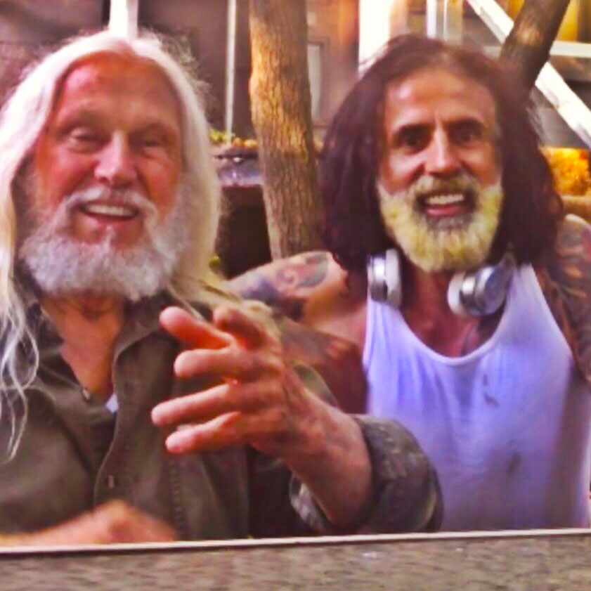

Le but de TYSO yoga est de cultiver l’énergie naturelle de l’univers ou Ch'i; TYSO yoga cultive cette force de vie primaire à travers le corps tels que les anciens alchimistes le faisaient en utilisant 3 domaines :
- La Santé
- Les pouvoirs du mental & du physique
- L’évolution Spirituelle
-Anthony
The goal of TYSO yoga is to harness the natural energy of the universe, or Ch'i; cultivating this primal life-force within the body, as did the ancient alchemists, through 3 areas:
- Health
- Developing mental & physical power
- Spiritual growth
-Anthony

Yoga Thérapie et maladie de Parkinson
Le yoga est l'un des traitements les plus bénéfiques et complémentaire pour la maladie de Parkinson (MP).
Contribuant ainsi à:
- - Accroître la flexibilité;
- - Améliorer la posture;
- - Relâchez les muscles tendus et douloureux;
- - Construire ou (reconstruire) la confiance en soi;
- - Et, grâce à ces avantages, améliorer la qualité de vie de la personne.
Yoga Therapy and Parkinson's Disease
Yoga is one of the most beneficial complementary therapies for Parkinson's disease (PD).
Helping to:
- - Increase flexibility;
- - Improve posture;
- - Loosen tight, painful muscles;
- - Build (or rebuild) confidence;
- - And, through these benefits, enhance quality of life.

 Back to top!
Back to top!

Le yoga et l'exercice sont deux aspects cruciaux pour améliorer la santé et favoriser la guérison des maladies.
Mais pourquoi ça?
Réponse courte:
Yoga = Mouvement;
Mouvement = Contractions Musculaires
et
Contractions Musculaires = Myokines
Les Myokines sont une classe de petites protéines, libérées par les muscles à chaque contraction, qui
agissent dans une gamme de fonctions; soutenir et renforcer les systèmes de base comme votre cœur, votre
cerveau, vos systèmes immunitaire et digestif, vos os et vos muscles.
Les protéines fonctionnent comme des clés; ne s'insérant que dans certaines serrures en forme, appelées
récepteurs. Les cellules communiquent en envoyant des protéines (clés) et en les recevant dans leurs propres
récepteurs (verrous).
Les récepteurs des Myokines se trouvent sur les cellules musculaires, graisseuses, hépatiques,
pancréatiques, osseuses, cardiaques, sanguines et cérébrales; cela nous indique que ces protéines sont
nécessaires à toute une série de processus biologiques.
Les clés Myokine ouvrent de nombreuses
portes à la santé et à la réparation; à l'inverse, sans libération optimale de ces protéines, ces systèmes
souffrent considérablement.
Nous pouvons donc commencer à voir comment le yoga aide à une santé parfaite. Mais alors pourrions-nous dire
que le yoga peut nous rendre heureux ?
Comme mentionné ci-dessus, les récepteurs des Myokines sont situés sur nos cellules cérébrales, cela
signifie que les Myokynes ont un rôle à jouer pour la fonction cérébrale saine; des études récentes ont
montré que ces protéines sont liées à la fonction cognitive et à l'humeur.
En d'autres termes, notre système musculo-squelettique et notre système nerveux central sont interdépendants
de ces mécanismes moléculaires.
Nos muscles se contractent et libèrent des protéines qui
interagissent avec notre cerveau ce qui a comme effet d'atténuer la dépression, l'anxiété et la solitude; ce
regain d'humeur et de cognition nous motive vers de nouvelles actions De cette façon, chaque étape du cycle
renforce les autres.
Le yoga nous permet de percevoir notre univers à travers des lunettes roses et à l’opposé un manque de
mouvement jette notre regard sur le monde dans une teinte grise et monotone.
Lorsque les Myokines s'activent, notre cerveau libère à son tour des niveaux plus élevés de produits
cérébraux tels que les bêtas-endorphines, le cortisol, l'hormone de croissance humaine et les
neurotransmetteurs; conduisant à une plus grande concentration, attitude et santé mentale globale.
C'est pourquoi le régime alimentaire est si critique; une mauvaise alimentation sabotera même les efforts
les plus héroïques déployés par les systèmes de notre corps
Ces processus étonnants de guérison
interne fonctionnent de manière optimale lorsqu'ils ne gaspillent pas les ressources et l'énergie en
essayant de traiter les poisons et les contaminants trouvés dans les aliments transformés et le fast-food.
Le yoga et une alimentation saine sont deux composantes essentiels à la santé et à la longévité globale de
notre corps et de notre esprit.
Namaste
Yoga & Exercise is crucial for health and healing.
But why is that?
Short answer:
Yoga = Movement;
Movement=Muscle Contractions
and
Muscle
Contractions=Myokines.
Myokines are a class of small proteins, released by muscles each time they contract, which act in a range of
functions; supporting and strengthening core systems like your heart, brain, immune and digestive systems,
bones and muscles.
Proteins work like keys; fitting into only certain shaped locks, called receptors. Cells communicate by
sending proteins (keys) and
receiving them in their own receptors (locks).
Myokine receptors are found on muscle, fat, liver, pancreatic, bone, heart,blood and brain cells; this tells
us that these proteins
are necessary for a whole host of biological processes.
Myokine keys open many doors to health and
repair; conversely, without optimal
release of these proteins, these systems suffer significantly.
So we can start to see how yoga makes us healthier; but how does it make is happier?
As stated above, myokine receptors are located on our brain cells, this means that myokines have a role to
play in healthy brain
function; recent studies have found these proteins are linked to cognitive function and mood.
In other words our musculoskeletal systems and our central nervous systems are interdependent on these
molecular mechanisms.
Our
muscles contracting release proteins which interact with our brains; mitigating depression, anxiety and
loneliness; this boost in mood and cognition motivates us towards further action and activities. In this way
each stage of the cycle reinforces the others.
Yoga lets us see through rose coloured glasses and a lack of movement casts the world in a grey hue.
When myokines activate ,our brains in turn release greater levels of cerebral goodies such as
beta-endorphins, cortisol, human growth
hormone and neurotransmitters; leading to greater focus, attitude and overall mental health.
This is why diet is so critical; a poor diet will sabotage even the most heroic efforts made by our body’s
systems.
These amazing
processes of internal healing operate optimally when not wasting resources and energy attempting to process
poisons and contaminants
found in processed and fast foods.
Yoga and a healthy diet are crucial to the overall health and longevity of our bodies and minds.
Namaste
Back to top!
Réservez Anthony pour votre prochain événement!

Cherchez pour une façon originale d’ajouter du Chi dans votre prochain événement caritatif,
ouverture de galerie ou party privé?
Pourquoi-pas du yoga?
Démarrez votre Stella McCartney's ! Indulgez-vous dans un nettoyage de
l’âme à travers des poses de yoga- fait sur mesure- chorégraphiés pour votre événement en particulier.
Book Anthony for your next event!
Looking for something original to inject some Chi into your next charity function, gallery
opening or private party?
How about some yoga?
Kick off your Stella McCartney's and indulge in soul-cleansing poses
custom-tailored to your particular event.
Back to top!
Camera-ready Intensives
Vous avez besoin de perdre du poids rapidement tout comme une vedette de Hollywood?
Vous venez de
décrocher un rôle et vous avez besoin d’apparaître à votre meilleur; vous voulez créer un effet WOW à cette
première/ événement ?
Peut-être avez-vous seulement besoin d’une détoxification?
Privé et discret, votre entrainement personnalisé vous projettera dans l’action- comme une
étoile ASAP.
Au-delà de l’entrainement: l’attention est donnée à tous les aspects de la santé et le bien-être; conférant
les outils nécessaires afin que les étudiants puissent vivre la transformation aujourd’hui et dans tous les
jours à venir.
Need to be Hollywood fit, fast?
Snagged a role and need to look awesome; want to wow at that
premiere/event?
Maybe just yearning for a detox.
Private and discrete, your personalized intensive will whip you into action-star shape
ASAP.
Way beyond a workout: attention is given to all aspects of health and well-being; imparting the student with
the tools necessary to live their change each day forward.
Back to top!
About Anthony

En tant que professeur de yoga certifié E-RYT500 and ETY500. Anthony Kamanos a eu le privilège d’étudier et de participer aux ateliers de Darby, T.K.V Desikachar, Shanhara, Sivananda, B.K . Iyengar , et beaucoup d’autres étudiants dérivant de la lignée du GURU, Sri Tirumalai Krishnamacharya.
Avant d’être un professeur de yoga, Anthony était un homme d’affaire. Il a passé 18
ans à voyager à travers le monde dont l’Asie ou il a passé la majeure partie du temps.
À travers ces
voyages; il a découvert les joies de manger du Dim Sum à Hong-Kong; s’asseoir dans un café à Paris; rouler en
motocyclette; faire du patin à roulette; découvrir le TANTRA de l’est et la philosophie TAO et finalement
apprendre à réduire son empreinte de carbone.
Dans so chapitre de vie le plus récent; Anthony s’est mis à enseigner la longévité et illuminer le chemin vers la sagesse. Trouvant ainsi des déplacements de paradigme accompagnant les étapes de la foi, à travers l’inconnu, ce qui nous garde spontané et jeune; L’apothéose de l’enseignement d’Anthony à travers TYSO yoga c’est son style avec un focus tout-spécifiquement sur la longévité.
As a certified E-RYT500 and ETY500 Yoga Teacher Anthony Kamanos has had the privilege of studying and participating in workshops with Darby, T.K.V Desikachar, Shanhara, Sivananda, B.K . Iyengar , and many other great students of the most prodigious Guru of them all, Sri Tirumalai Krishnamacharya.
Starting out as a businessman Anthony spent 18 years travelling the globe, much of it
spent living in Asia.
Through these journeys he discovered the joys of eating dim sum in Hong-Kong;
sitting at a cafe in Paris; riding motorbikes; roller blading; discovering Eastern TANTRA and TAO philosophy
and learning how to reduce his carbon footprint.
His most recent chapter finds Anthony teaching longevity and illuminating the way to enlightenment and the paradigm shifts that accompany the leaps of faith, into the unknown, that keep us fresh and youthful; the cornerstone of his teachings is Anthony's novel TYSO Yoga style, designed specifically with a focus on longevity.
Back to top!
Longevity
L’âge est juste un nombre!
Faites-le Yoga aussi arbitraire que vous le souhaitez.
Laissez Anthony vous montrer à quel point l'âge peut être négligeable!
Age truly is just a number!
Make it as arbitrary as you wish.
Let Anthony show you just how insignificant age can be!
Back to top!
Videos

{kind=link}
{kind=link}
{kind=link}
{kind=link}
{kind=link}
{kind=link}
{kind=link}
{kind=link}
{kind=link}
{kind=link}
{kind=link}
{kind=link}
{kind=link}
{kind=link}
{kind=link}
{kind=link}
{kind=link}
{kind=link}
{kind=link}
{kind=link}
{kind=link} Back to top!
Back to top!
Private Classes Privés

1 sur 1 sessions
Coach de vie inclus
1 on 1 sessions
Life coaching included
Pop-Up Classes

Invitez vos amis et adoptez une certaine spontanéité!
Grab your friends and embrace some spontaneity!
Back to top!